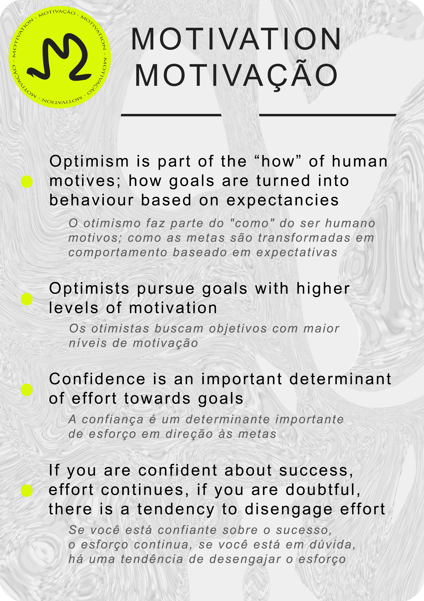

Dispositional optimism refers to generalized outcome expectancies that good things,
rather than bad things, will happen; pessimism refers to the tendency to expect negative outcomes in the future.
Keywords:
Optimism, Pessimism, Health, Coping, Motivation, Expectancies
O otimismo disposicional se refere às expectativas generalizadas de resultados de que coisas boas,
em vez de coisas ruins, acontecerão; pessimismo se refere à tendência de esperar resultados negativos no futuro.
Palavras-chave:
Otimismo, Pessimismo, Saúde, Enfrentamento, Motivação, Expectativas
Download the files to print your own pack of cards. If you have a printer that can print double sided, then perfect! You can use A4 paper
to print out your own set using the download link below.
->Download
Baixe os arquivos para imprimir seu próprio baralho de cartas. Se você tem uma impressora que imprime em frente e verso, perfeito! Você pode usar papel A4
para imprimir seu próprio conjunto usando o link de download abaixo.
->Download